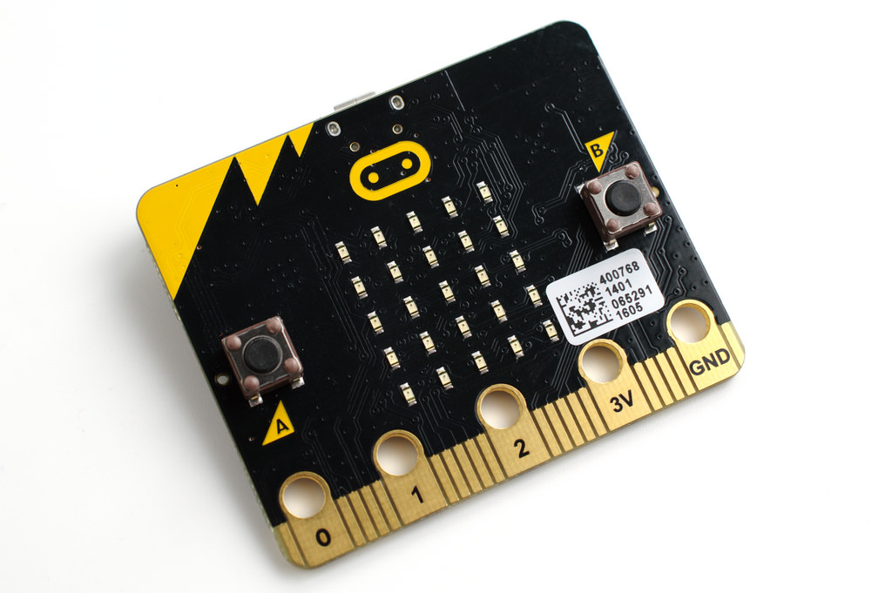

Objets connectés
du matériel pour programmer !
% 4e journée sur l’enseignement de l’informatique % avril 2019
Présentations
Animateurs d’atelier
Qui ?
Bruno Bourgine & Pascal Padilla
Quoi ?
Professeurs de Mathématiques et Sciences Physiques en Lycée Professionnel
Où ?
IREM Marseille
Groupe InEFLP
Innovation
Expérimentation
Micro-contrôleur
Formation
####Algorithme
À propos de cet atelier
Programmer des objets connectés pour faire des maths.
- Comprendre les objets de notre environnement.
- Des objets pour mesurer et communiquer.
- Des objets pour faire des maths.
Déroulement de cet atelier
(théorique)
- Découverte du Micro:bit
- La programmation par bloc
- La programmation en Python
Micro:Bit



Petit quizz !
Ouvrir le lien utile Quizz de la page

À propos du tirage aléatoire
Discussion :
- quel intéret ?
- quelle plus-value ?
Activité de recherche
Problématique
On utilise une boucle de n itérations pour allumer aléatoirement les diodes du Micro:bit.

Combien d’itérations sont nécessaires pour allumer toutes les diodes ?
Merci
##Groupe InEFLP
Innovation
Formes scolaires innovantes
Expérimentation
Micro-contrôleur
Formation
Algorithme
Lycée Professionnel